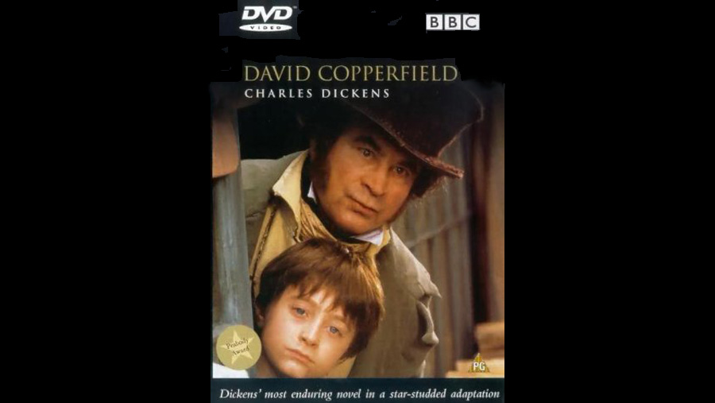
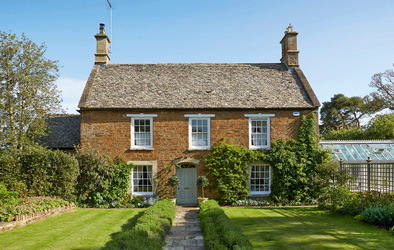
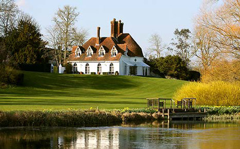
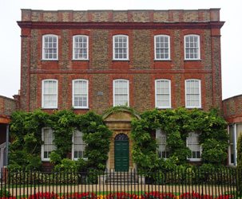
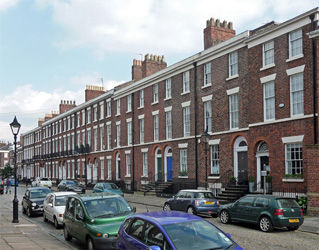
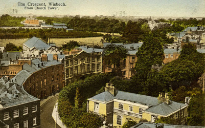
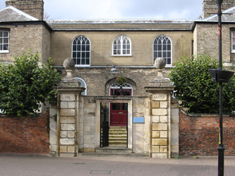

| Character | Actor |
|---|---|
| David Copperfield (Young) | Daniel Radcliffe |
| Clara Copperfield | Emilia Fox |
| Betsey Trotwood | Maggie Smith |
| Clara Peggotty | Pauline Quirke |
| Edward Murdstone | Trevor Eve |
| Barkis | Michael Elphick |
| Dan Peggotty | Alun Armstrong |
| Ham Peggotty | James Thornton |
| Emily (Young) | Laura Harling |
| Mrs Gummidge | Patsy Byrne |
| Jane Murdstone | Zoë Wanamaker |
| David Copperfield (Adult) | Ciarán McMenamin |
| Emily (Adult) | Aislin McGuckin |
| Mr Creakle | Ian McKellen |
| Tungay | Karl Johnson |
| James Steerforth (Young) | Harry Lloyd |
| Mrs Steerforth | Cherie Lunghi |
| James Steerforth (Adult) | Oliver Milburn |
| Littimer | Kenneth MacDonald |
| Wilkins Micawber | Bob Hoskins |
| Emma Micawber | Imelda Staunton |
| Mrs Crupp | Dawn French |
| The Pawnbroker | Paul Whitehouse |
| Mr. Dick | Ian McNeice |
| Mr Spenlow | James Grout |
| Dora Spenlow | Joanna Page |
| Uriah Heep | Nicholas Lyndhurst |
| Mrs Heep | Thelma Barlow |
| Mr Wickfield | Oliver Ford Davies |
| Agnes Wickfield (Young) | Antonia Corrigan |
| Agnes Wickfield (Adult) | Amanda Ryan |
| Clara (Young) | Morgane Slemp |
| Rosa Dartle | Clare Holman |
| Narrator (as old David) | Tom Wilkinson |
| Role | Person |
|---|---|
| Director | Simon Curtis |
| Screenplay | Adrian Hodges |

The Square, Great Tew, Oxfordshire
(The Rookery, Blunderstone - David's childhood home)

Houghton Lodge, Stockbridge, Hampshire
(Betsey Trotwood's house, Dover)

Peckover House, North Brink, Wisbech, Cambridgeshire
(Steerforth House, Highgate)

Falkner Street, Liverpool, Merseyside
(Micawber House, London)

The Crescent, Wisbech, Cambridgeshire
(Golden Cross Inn, London)

Wisbech Castle, Museum Square, Wisbech, Cambridgeshire
(Wickfield House, Cambridge)